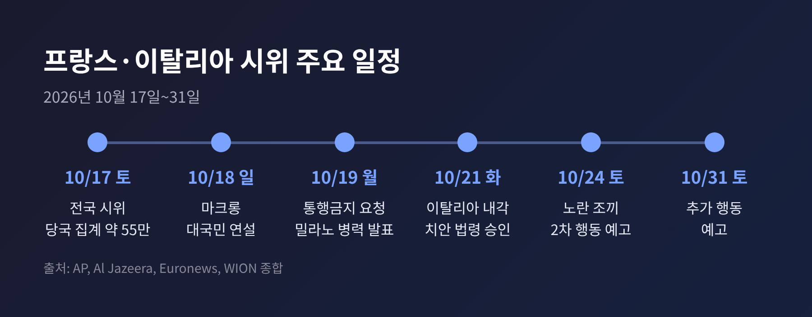
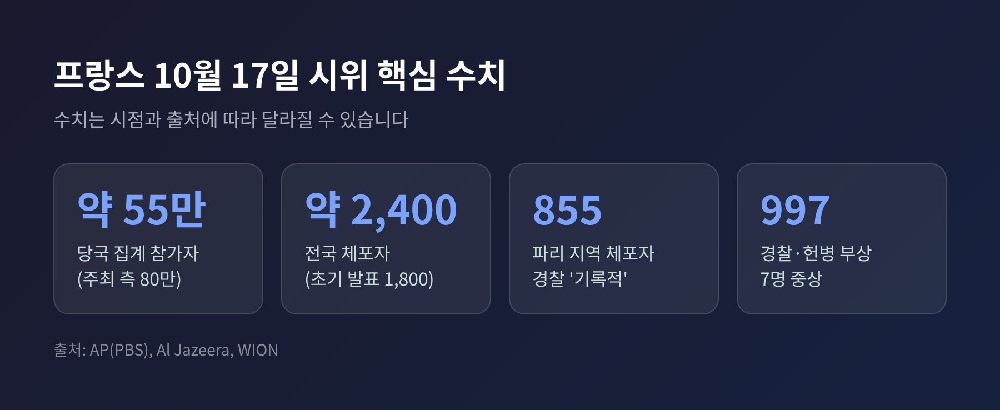
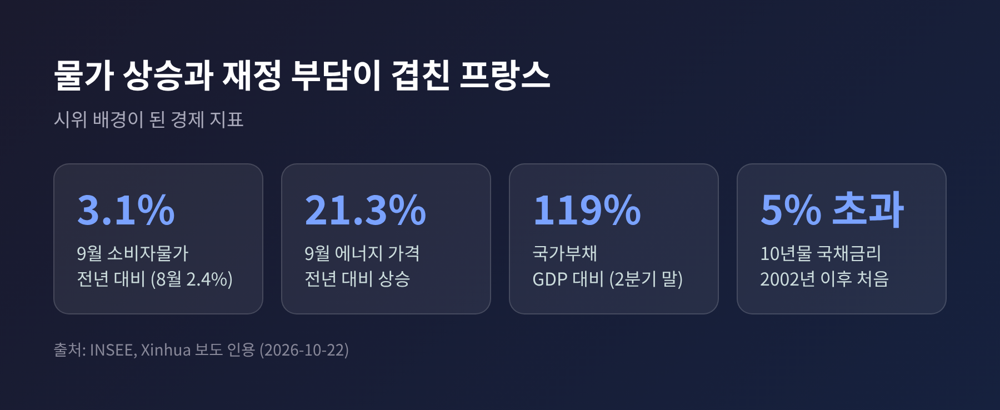
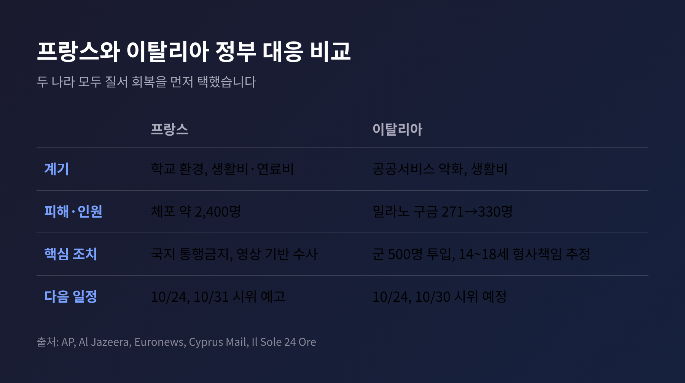
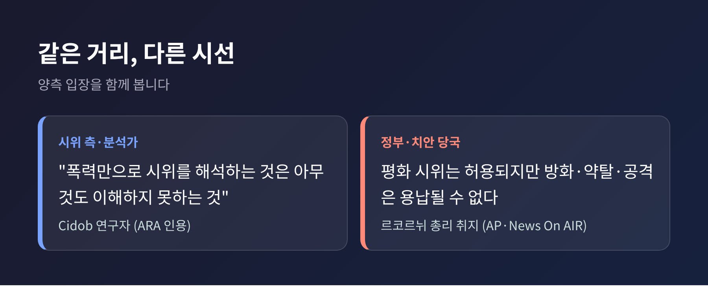

3줄 요약 - 10월 17일 프랑스 전역 시위에 당국 집계 약 55만 명이 참여했고, 폭력 사태 끝에 체포자는 약 2,400명으로 늘었습니다. - 이탈리아는 밀라노에 군 500명을 투입하고, 14~18세 미성년자의 형사책임을 추정하는 법령을 21일 내각에서 승인했습니다. - 두 나라 모두 시위대의 불만과 정부의 치안 논리가 맞서고 있으며, 프랑스에서는 24일 추가 시위가 예고돼 있습니다.
이번 글에서는 유럽 생활비 시위가 어떻게 번졌는지, 두 나라 정부가 어떻게 대응했는지 정리해 보겠습니다. 호르무즈 위기와의 연관성도 어디까지 확인되는지 따져 봅니다.
시작은 학교였습니다. 9월 말 고등학생들이 과밀 학급과 교사 부족, 낡은 시설에 항의하며 거리로 나왔습니다.
이후 생활비와 연료비 부담을 호소하는 시민, 노동조합(CGT), 옛 '노란 조끼' 활동가가 합류했습니다. 주최 측은 17일 토요일 행진을 '노란색과 청년'이라고 불렀습니다.
참가 규모는 집계가 갈립니다. 당국은 약 55만 명, 주최 측은 80만 명이라고 밝혔습니다.
행진 자체는 대체로 평화적으로 시작됐다는 분석이 있습니다. 그러나 일부 지역에서 상황이 달라졌습니다. 리모주에서는 19세기에 지어진 시청에 불이 나 지붕이 무너졌습니다. 마르세유에서는 시위대가 시청 로비에 들어갔고 경찰서가 훼손됐습니다. 리옹 관광안내소에서도 불이 났습니다. 파리에서는 공화국광장에서 최루탄이 쓰였고 상점 약탈이 이어졌습니다.

체포자 수는 시간이 지나며 불어났습니다. 18일에는 1,800명이라는 발표가 나왔고, 이후 내무장관이 '거의 2,400명'이라고 밝혔습니다. 파리 지역만 855명으로 경찰이 기록적이라고 설명했습니다. 법무장관 집계로는 주말 합계 2,330명 이상이고, 이 중 70%가 성인이었습니다.
경찰 쪽 피해도 컸습니다. 경찰과 헌병 997명이 다쳤고 7명은 중상이었습니다. 반대편에서도 부상자가 나왔습니다. 경찰 진압 장비로 시위 참가자가 중상을 입은 사례가 보고돼 수사가 진행 중입니다. 파리 행진 도중 한 명이 심장마비로 숨졌는데, 당국은 건강 문제로 설명했고 검찰이 경위를 조사하고 있습니다.

대응은 두 갈래였습니다. 하나는 치안, 다른 하나는 사법입니다.
18일 저녁 에마뉘엘 마크롱 대통령은 약 8분간 대국민 연설을 했습니다. "공화국을 무너뜨리려 한 이들은 책임을 지게 될 것"이라며, 약탈한 이들이 피해를 물어야 한다고 말했습니다. 폭력의 배후로는 극좌 성향의 '반란 세력'과 범죄자를 지목했습니다.
19일 세바스티앵 르코르뉘 총리는 지방 당국에 부분적·국지적 야간 통행금지를 요청했습니다. 파리에서는 공화국광장과 레알 일대에 밤 11시부터 새벽 6시까지 통행금지가 걸렸습니다. 일부 도시는 미성년자만을 대상으로 했습니다. 파리 전역 통행금지는 "논외"라고 선을 그었고, 비상사태 선포는 필요하면 가능하다는 입장입니다.
사법 쪽은 영상 추적에 무게를 뒀습니다. 파리 경찰청 수사관 약 200명이 영상과 SNS 기록을 분석해 용의자를 식별할 계획입니다. 총리는 "특히 중대한 형사 대응"을 예고했습니다.
흥미로운 대목은 경찰 스스로의 평가입니다. 로랑 누녜스 내무장관은 일부 도시에서 경찰이 '통제력을 잃었다'고 인정하고 사의를 밝혔지만, 마크롱 대통령이 반려했습니다. 마르세유 시장은 이를 '치안 실패'라고 불렀습니다. 예고된 시위에 경찰력이 모자랐다는 비판입니다.
교육 쪽 양보도 있었습니다. 정부는 대체교사 3,000명을 추가 배치하고, 일부 대학 등록금 인상안을 접겠다고 밝혔습니다. 다만 내무장관은 추가 양보에는 한계가 있다고 시사했습니다.
프랑스 통계청(INSEE)에 따르면 9월 소비자물가는 전년보다 3.1% 올랐습니다. 8월의 2.4%에서 뛰었고, 에너지 가격은 21.3% 상승했습니다. 경제는 1분기에 0.2% 위축됐고 2분기에는 제자리였습니다. 가계 구매력은 2분기에 0.6% 줄었습니다.
문제는 정부의 여력입니다. 국가부채는 2분기 말 GDP의 119%에 이르렀고, 10년물 국채금리는 2002년 이후 처음으로 5%를 넘었다고 합니다. 이자 비용은 올해 792억 유로에서 내년 912억 유로로 늘어날 전망입니다. 시민은 살림이 팍팍해졌다고 느끼는데, 정부는 쓸 돈이 마땅치 않은 구조입니다.

호르무즈 위기와의 관계는 신중하게 봐야 합니다. 마크롱 대통령은 연설에서 생활비와 연료비 걱정이 "페르시아만에서 시작된 분쟁"에서 비롯됐다고 말했고, 프랑스는 그 전쟁에 참여하지 않았다고 덧붙였습니다. 일부 보도도 연료가격 상승을 중동 전쟁과 호르무즈 사실상 봉쇄에 연결합니다.
그러나 시위의 직접적 계기는 학교 문제였고, 물가와 재정 문제는 그 전부터 쌓여 있었습니다. 에너지 비용이 불을 키운 요인일 수는 있지만, 어느 정도인지는 확인된 자료가 없습니다. 이탈리아 시위와 호르무즈의 직접 연관도 확인되지 않았습니다.
이탈리아는 같은 17일 토요일에 불이 붙었습니다. 공공서비스 악화와 생활비 상승에 항의하는 평화 시위로 시작했지만, 수백 명의 복면 시위대가 쓰레기통에 불을 지르고 상점을 약탈했습니다. 다수가 미성년자로 추정됩니다. 볼로냐, 브레시아, 베르가모, 토리노에서도 충돌이 있었습니다. 일부 시위대는 "프랑스처럼 하자"는 구호를 외쳤다고 보도됐습니다.
밀라노에서는 일요일 하루에만 271명이 구금됐습니다. 이후 집계에서 구금자는 330명으로 늘었고, 상당수가 미성년자였다고 합니다.
조르지아 멜로니 총리 정부는 21일 내각에서 치안 법령을 승인했습니다. 핵심은 네 가지입니다.
멜로니 총리는 파괴와 절도는 시위가 아니라 범죄라고 말했습니다. 마테오 살비니 부총리는 병력 투입을 "말에서 행동으로"라고 표현했습니다.

군 투입과 미성년자 처벌 강화에 대한 야당·인권단체의 반응은 이번 리서치에서 확인되지 않았습니다. 다만 군에 경찰권한을 주지 않은 대목에서 대통령의 우려가 일부 반영된 것으로 읽힙니다.
시위대와 지지자들은 불만의 뿌리가 구조적이라고 말합니다. 개학 뒤 드러난 학교 문제, 오른 물가, 불투명한 미래입니다. 스페인 싱크탱크 Cidob의 연구자 에크토르 산체스 마르갈레프는 "폭력만으로 시위를 해석하는 것은 아무것도 이해하지 못하는 것"이라고 했습니다. 프랑스24가 인용한 분석가도 대부분의 시위는 평화적이었고, 일부 약탈은 기회주의적이었다고 봤습니다.
정부와 치안 당국은 다른 지점을 짚습니다. 평화 시위는 보장하지만 방화와 약탈, 공공건물 공격은 용납할 수 없다는 것입니다. 르코르뉘 총리도 같은 취지로 말했습니다.
책임 공방도 갈립니다. 정부와 마린 르펜은 극좌 세력을 꼽았고, 장뤼크 멜랑숑은 당국이 긴장을 키웠다고 비판했습니다. 한편 미국 측에서는 이민 문제로 연결하는 발언이 나왔으나, 프랑스 당국은 이민자와의 연관을 제시하지 않았습니다.

단기 변수는 날짜로 정리됩니다. 노란 조끼 조정 그룹은 24일과 31일에 새 행동을 예고했고, 지도에는 수십 곳이 올라 있습니다. 마크롱 대통령은 필요하면 시위를 금지할 수 있다고 했습니다. 이탈리아에서도 24일과 30일 주요 도시 시위가 예정돼 있습니다.
중기 변수는 선거입니다. 프랑스는 내년 봄 대선까지 약 6개월이 남았고, 멜로니 총리도 내년 총선을 앞뒀습니다. 치안 강화는 보수 지지층에 호소력이 있지만, 시위대의 불만을 풀어주지는 못합니다. 반대로 양보를 늘리기에는 재정이 빠듯합니다.
유럽 전체로 보면 알바니아, 벨기에까지 시위가 번졌습니다. 조직이나 지도부가 뚜렷하지 않다는 점이 특징이어서, 협상 상대가 없는 시위를 어떻게 다룰지가 숙제로 남습니다.
정리하면 이렇습니다.
학교에서 시작된 불만이 물가와 재정의 벽을 만나 거리로 번졌고, 두 정부는 질서 회복을 먼저 택했습니다.
"질서를 세우는 일"과 "불만을 듣는 일"은 서로 다른 과제입니다. 어느 한쪽만으로는 다음 토요일을 장담하기 어렵습니다.